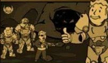
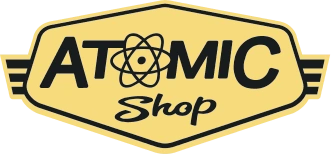
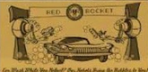

llega el parche de inventario

este nuevo parche llega a Fallout 76para ayudar a organizar mejor nuestro inventario entre otras cosas. A continuacion las novedades mas importantes.
Aumento del alijo,de 800 a 1200.
Nuevas pestañas en el Pip-Boy, ahora armaduras y atuendos estan por separado y comida y bebida estan separadas de ayuda, lo cual agilizara mucho mas la busqueda de nuestros objetos. Tambien se incorpora la pestañab "nuevo" donde encontraremos los ultimos items recogidos en la sesion actual ordenados en el orden en el que se recogen.
Nueva funcion "peso apilado" nos mustra el peso total de un item que tengamos en la cantidad (Trip: atentos con los items de ayuda y comida y bebida, que suelen ser los que mas se acumulan sin darse cuenta!).

Tambien encontraremos mejoras en la interfaz de la vista en el mapa de las maquinas vendedoras de jugadores. Ahora aparecen diferenciadas armas y armaduras por cantidad de estrellas legendarias, lo cual sin duda nos ahorrarà muchos viajes rapidos.

operaciones diarias
A partir de esta acualizacion al completar una operacion diaria alcanzado el rango de "maestre" se garantizara la obencion de almenos un objeto de entres las recompensas poco comunes
conocimiento porhibido
La conocida mision secundaria ha sido reactivada luego de haber solucionado los problemas con los datos tecnicos. Y ahora no solo pueden depositarse en Campamento Aventura, tambien son recibidos en fuerte altlas por la escriba Odessa valdez de la Hermandad de Acero, a quien vemos en la siguiente imagen.
Consejo diario: no olvides llevar siempre un poco de Rad-X por si te topas con una tormenta radioactiva ;-)
Novedade Tienda atomica
En la tienda atomica se ha anadido una opcion para que mustres solo los items que no hemos comprado, para facilitar la navegacion y mejorar la visualizaciòn.
En esta semana encontraremos las siguientes novedades:
Camara de habitaciones de refugio 1500
atomos
conjunto de sofas modulares 500 atomos
servoarmadura de rangerdel parque 1200 atomos
ademas de muchas ofertas entre las que destacan los letreros de Quantum, Od Possum y Pickaxe,
conjunto de bar elegante, Conjunto de de barra de Slocums Joe, entre otras

No olvides reclamar la skin gratuita del "Rompecorazones para la Llave Grifa y participar del evento Muero de Amor donde deberás completar desafios diarios y semanales que otorgarán recompensas como tarteras, kits de reparacon, sobres de perks y objetos de tiempo limitado (atuendo de RobCo, Bungaló rústico y Casco de pescador de langostas